Generate data for pytest#
%load_ext autoreload
%autoreload 2
import arviz as az
import matplotlib.pyplot as plt
import numpy as np
import pandas as pd
import stratmc
import stratmc.config
from scipy.ndimage import gaussian_filter as gaussian
from scipy.stats import gaussian_kde
import warnings
warnings.simplefilter(action='ignore', category=FutureWarning)
WARNING (pytensor.tensor.blas): Using NumPy C-API based implementation for BLAS functions.
import pickle
Make synthetic proxy signals#
Three proxies - two for the inference, one for testing interpolation functions
age_vector = np.arange(100, 150, 0.25)
amplitude = [4, -5]
d13c_signal = stratmc.synthetics.make_excursion(age_vector, amplitude, excursion_duration = [15, 20], rising_time = [0.5, 0.5],
smooth = True, smoothing_factor = 2, rate_offset = True, seed = 0)
d13c_signal = gaussian(np.flip(d13c_signal), 3)
cyclic_d18o = 1.5 * np.sin((age_vector) * 2 * np.pi * (1/20))
long_term_increase = 5
d18o_signal = (cyclic_d18o + long_term_increase / (age_vector[-1] - age_vector[0]) * (age_vector - 100))
d18o_signal = gaussian(np.flip(d18o_signal), 3)
amplitude = [30, 25]
d34s_signal = stratmc.synthetics.make_excursion(age_vector, amplitude, baseline = 20, excursion_duration = [8, 5], rising_time = [0.3, 0.7, 0.9, 0.3],
smooth = True, smoothing_factor = 2, rate_offset = True, seed = 3)
d34s_signal = gaussian(np.flip(d34s_signal), 10)
signal_dict = {}
signal_dict['d13c'] = d13c_signal
signal_dict['d18o'] = d18o_signal
signal_dict['d34s'] = d34s_signal
proxies = ['d13c', 'd18o', 'd34s']
fs = 10
fig, ax = plt.subplots(1, 3, figsize = (8, 1.75), sharex = True)
ax[0].plot(age_vector, signal_dict['d13c'], color = 'indianred', lw = 1.5)
ax[0].set_ylabel('$\delta^{13}$C (‰)', fontsize = fs)
ax[1].plot(age_vector, signal_dict['d18o'], color = '#87BED5', lw = 1.5)
ax[1].set_ylabel('$\delta^{18}$O (‰)', fontsize = fs)
ax[2].plot(age_vector, signal_dict['d34s'], color = 'mediumseagreen', lw = 1.5)
ax[2].set_ylabel('$\delta^{34}$S (‰)', fontsize = fs)
for axis in ax.ravel():
axis.grid(color=(0.95, 0.95, 0.95), linewidth=0.5, linestyle = 'solid', zorder = -1)
axis.set_axisbelow(True)
axis.tick_params(direction = 'in', labelsize = fs)
axis.set_xlabel('Age (Ma)', fontsize = fs)
ax[0].set_xlim([150, 100])
for axis in ax.ravel():
axis.set_xticks([150, 125, 100])
fig.tight_layout()
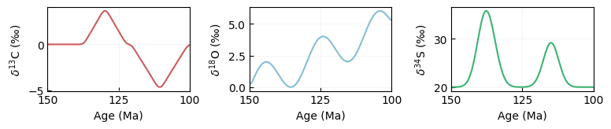
num_samples = 6
num_sections = 3
section_thickness = 10
section_seed = 25
section_noise = False
section_noise_amp = {}
section_noise_amp['d13c'] = 0.75
section_noise_amp['d18o'] = 0.75
section_noise_amp['d34s'] = 2
sections = []
age_constraints = {}
age_constraints_std = {}
for i in np.arange(num_sections):
sections.append(str(i))
np.random.seed(0)
age_constraints[str(i)] = np.array([100, 150]) # np.random.uniform(410, 440, 1)[0]
age_constraints_std[str(i)] = np.array([1, 2])
ages_df, sample_df = stratmc.synthetics.synthetic_sections(age_vector, signal_dict, num_sections, num_samples, section_thickness, noise = section_noise, noise_amp = section_noise_amp, seed = section_seed, age_constraints = age_constraints, age_constraints_std = age_constraints_std, proxies = proxies)
ages_df['param_1_name'] = np.nan
ages_df['param_2_name'] = np.nan
ages_df['param_1'] = np.nan
ages_df['param_2'] = np.nan
## modify the proxy observations
# remove d18O for 1 sample from section 0
sample_df['d18o'].loc[0] = np.nan
# remove d13C for 1 sample from section 0
sample_df['d13c'].loc[1] = np.nan
# exclude 1 sample from section 0
sample_df['Exclude?'].loc[3] = True
# remove 3 samples from section 1
sample_df.drop(index = [6, 8, 10], inplace = True)
# remove 3 samples from section 2
sample_df.drop(index = [12, 14, 16], inplace = True)
# remove d18O from section 2
sample_df['d18o'][sample_df['section'] == '2'] = np.nan
sample_df[sample_df['section'] == '2']
| section | height | age | d13c | d18o | d34s | Exclude? | |
|---|---|---|---|---|---|---|---|
| 13 | 2 | 3.464194 | 143.400160 | 0.000000 | NaN | 22.347291 | False |
| 15 | 2 | 4.356996 | 136.769865 | 0.337462 | NaN | 35.110893 | False |
| 17 | 2 | 6.582216 | 119.169039 | -0.695132 | NaN | 22.712199 | False |
## modify the age constraints
# shared minimum age (normal) for sections 1 and 2
ages_df['shared?'].loc[[3, 5]] = True
ages_df['name'].loc[[3, 5]] = 'S1_S2_min_age'
# add a normal detrital age to section 1
dz_dict = {
'section': ['1'],
'height': [2.3],
'age': [130],
'age_std': [2],
'distribution_type': 'Normal',
'param_1': [np.nan],
'param_2': [np.nan],
'param_1_name': [np.nan],
'param_2_name': [np.nan],
'shared?': False,
'intermediate detrital?': True,
'intermediate intrusive?': False,
'name': 'DETRITRAL_1',
'Exclude?': False
}
ages_df = pd.concat([ages_df, pd.DataFrame.from_dict(dz_dict)], ignore_index = True)
# add a normal instrusive age to section 1
intrusive_dict = {
'section': ['1'],
'height': [1.5],
'age': [120],
'age_std': [1],
'distribution_type': 'Normal',
'param_1': [np.nan],
'param_2': [np.nan],
'param_1_name': [np.nan],
'param_2_name': [np.nan],
'shared?': False,
'intermediate detrital?': False,
'intermediate intrusive?': True,
'name': 'INTRUSIVE_1',
'Exclude?': False
}
ages_df = pd.concat([ages_df, pd.DataFrame.from_dict(intrusive_dict)], ignore_index = True)
# custom prior for max age of section 2
ages_df['age'].loc[4] = np.nan
ages_df['age_std'].loc[4] = np.nan
ages_df['distribution_type'].loc[4] = 'Uniform'
ages_df['param_1_name'].loc[4] = 'lower'
ages_df['param_1'].loc[4] = 147
ages_df['param_2_name'].loc[4] = 'upper'
ages_df['param_2'].loc[4] = 152
# custom intrusive age prior for section 2
intrusive_dict = {
'section': ['2'],
'height': [4],
'age': [np.nan],
'age_std': [np.nan],
'distribution_type': 'Cauchy',
'param_1': [125], # location of peak
'param_2': [1], # scale
'param_1_name': ['alpha'],
'param_2_name': ['beta'],
'shared?': False,
'intermediate detrital?': False,
'intermediate intrusive?': True,
'name': 'INTRUSIVE_2',
'Exclude?': False
}
ages_df = pd.concat([ages_df, pd.DataFrame.from_dict(intrusive_dict)], ignore_index = True)
# custom detrital age prior for section 2
dz_dict = {
'section': ['2'],
'height': [5],
'age': [np.nan],
'age_std': [np.nan],
'distribution_type': 'Uniform',
'param_1': [138],
'param_2': [142],
'param_1_name': ['lower'],
'param_2_name': ['upper'],
'shared?': False,
'intermediate detrital?': True,
'intermediate intrusive?': False,
'name': 'DETRITAL_2',
'Exclude?': False
}
ages_df = pd.concat([ages_df, pd.DataFrame.from_dict(dz_dict)], ignore_index = True)
sample_df, ages_df = stratmc.data.clean_data(sample_df, ages_df, proxies = proxies, sections = sections)
# add custom noise and offset groups for d13c and d18o to sample_df
sample_df
| section | height | age | d13c | d18o | d34s | Exclude? | |
|---|---|---|---|---|---|---|---|
| 0 | 0 | 0.726341 | 143.506207 | 0.000000 | NaN | 22.174702 | False |
| 1 | 0 | 1.019653 | 129.113846 | NaN | 2.363407 | 20.344371 | False |
| 2 | 0 | 1.706731 | 120.555006 | -0.150746 | 3.299016 | 21.083621 | False |
| 3 | 0 | 1.813515 | 113.941947 | -3.295373 | 2.187376 | 28.621435 | True |
| 4 | 0 | 2.090381 | 109.295562 | -4.373225 | 4.273271 | 21.049269 | False |
| 5 | 0 | 6.145956 | 105.868777 | -2.653027 | 5.778884 | 20.030358 | False |
| 6 | 1 | 1.307739 | 139.461037 | 0.000239 | 0.901868 | 33.228554 | False |
| 7 | 1 | 2.235939 | 125.969574 | 1.955658 | 3.742717 | 20.011178 | False |
| 8 | 1 | 2.553568 | 109.396070 | -4.413917 | 4.217433 | 21.135780 | False |
| 9 | 2 | 3.464194 | 143.400160 | 0.000000 | NaN | 22.347291 | False |
| 10 | 2 | 4.356996 | 136.769865 | 0.337462 | NaN | 35.110893 | False |
| 11 | 2 | 6.582216 | 119.169039 | -0.695132 | NaN | 22.712199 | False |
# twelve samples, 2 groups
groups = ['deep', 'shallow'] * 6
sample_df['offset_group_d13c'] = groups
sample_df['offset_group_d18o'] = groups
sample_df['noise_group_d13c'] = groups
sample_df['noise_group_d18o'] = groups
fig = stratmc.plotting.proxy_strat(sample_df, ages_df, proxy = 'd13c', plot_excluded_samples = True)
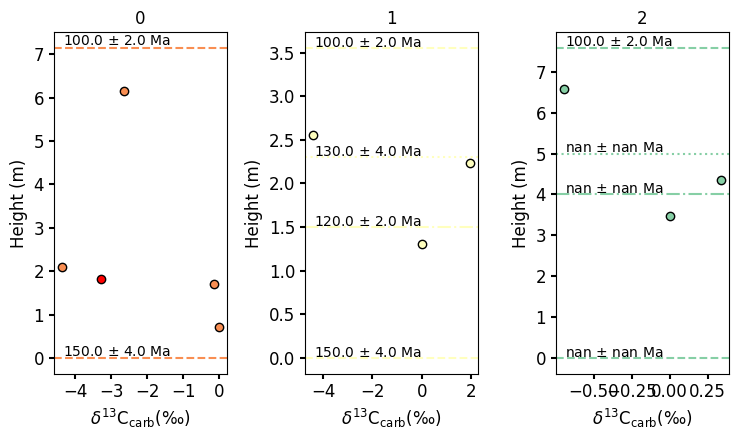
# # save data to .csv files
# sample_df.to_csv('test_sample_df.csv', index = False)
# ages_df.to_csv('test_ages_df.csv', index = False)
sample_df, ages_df = stratmc.data.load_data('test_sample_df', 'test_ages_df', proxies = ['d13c', 'd18o', 'd34s'], proxy_sigma_default = {'d13c': 0.1, 'd18o': 0.25, 'd34s': 0.5})
sample_df
| section | height | age | d13c | d18o | d34s | Exclude? | offset_group_d13c | offset_group_d18o | noise_group_d13c | noise_group_d18o | d13c_std | d18o_std | d34s_std | |
|---|---|---|---|---|---|---|---|---|---|---|---|---|---|---|
| 0 | 0 | 0.726341 | 143.506207 | 0.000000 | NaN | 22.174702 | False | deep | deep | deep | deep | 0.1 | 0.25 | 0.5 |
| 1 | 0 | 1.019653 | 129.113846 | NaN | 2.363407 | 20.344371 | False | shallow | shallow | shallow | shallow | 0.1 | 0.25 | 0.5 |
| 2 | 0 | 1.706731 | 120.555006 | -0.150746 | 3.299016 | 21.083621 | False | deep | deep | deep | deep | 0.1 | 0.25 | 0.5 |
| 3 | 0 | 1.813515 | 113.941947 | -3.295373 | 2.187376 | 28.621435 | True | shallow | shallow | shallow | shallow | 0.1 | 0.25 | 0.5 |
| 4 | 0 | 2.090381 | 109.295562 | -4.373225 | 4.273271 | 21.049269 | False | deep | deep | deep | deep | 0.1 | 0.25 | 0.5 |
| 5 | 0 | 6.145956 | 105.868777 | -2.653027 | 5.778884 | 20.030358 | False | shallow | shallow | shallow | shallow | 0.1 | 0.25 | 0.5 |
| 6 | 1 | 1.307739 | 139.461037 | 0.000239 | 0.901868 | 33.228554 | False | deep | deep | deep | deep | 0.1 | 0.25 | 0.5 |
| 7 | 1 | 2.235939 | 125.969574 | 1.955658 | 3.742717 | 20.011178 | False | shallow | shallow | shallow | shallow | 0.1 | 0.25 | 0.5 |
| 8 | 1 | 2.553568 | 109.396070 | -4.413917 | 4.217433 | 21.135780 | False | deep | deep | deep | deep | 0.1 | 0.25 | 0.5 |
| 9 | 2 | 3.464194 | 143.400160 | 0.000000 | NaN | 22.347291 | False | shallow | shallow | shallow | shallow | 0.1 | 0.25 | 0.5 |
| 10 | 2 | 4.356996 | 136.769865 | 0.337462 | NaN | 35.110893 | False | deep | deep | deep | deep | 0.1 | 0.25 | 0.5 |
| 11 | 2 | 6.582216 | 119.169039 | -0.695132 | NaN | 22.712199 | False | shallow | shallow | shallow | shallow | 0.1 | 0.25 | 0.5 |
Design model tests#
Test 1:#
All default priors
Per-section offset and noise terms
# load data
sample_df, ages_df = stratmc.data.load_data('test_sample_df', 'test_ages_df', proxies = ['d13c', 'd18o', 'd34s'], proxy_sigma_default = {'d13c': 0.1, 'd18o': 0.25, 'd34s': 0.5})
# for this test, remove the d18o_std column to make sure that it's filled in w/in build_model if necessary
# sample_df['d18o_std'] = np.nan
model, gp = stratmc.model.build_model(
sample_df,
ages_df,
proxies = ['d13c', 'd18o'],
ls_dist = 'Wald',
ls_min = 1, # minimum RBF kernel lengthscale
ls_mu = 5, # mean of Wald distribution used as RBF kernel lengthscale prior
ls_lambda = 15, # lambda of Wald distribution used as RBF kernel lengthscale prior
offset_type = 'section', # per-section offset with default prior
noise_type = 'section', # per-section noise with default prior
)
Using radiometric age priors specified in ages_df for section 1
Using radiometric age priors specified in ages_df for section 2
model
\[\begin{split}
\begin{array}{rcl}
\text{gp_ls_unshifted_d13c} &\sim & \operatorname{Wald}(5,~15,~0)\\\text{gp_var_d13c} &\sim & \operatorname{HalfNormal}(0,~10)\\\text{m_d13c} &\sim & \operatorname{Normal}(-1.21,~4.04)\\\text{gp_ls_unshifted_d18o} &\sim & \operatorname{Wald}(5,~15,~0)\\\text{gp_var_d18o} &\sim & \operatorname{HalfNormal}(0,~10)\\\text{m_d18o} &\sim & \operatorname{Normal}(3.35,~2.83)\\\text{S1_S2_min_age} &\sim & \operatorname{Normal}(100,~1)\\\text{0_flip_radiometric_age} &\sim & \operatorname{Normal}(\text{<constant>},~\text{<constant>})\\\text{0_0_unsorted_random_ages} &\sim & \operatorname{Uniform}(0,~1)\\\text{0_0_scaling_factor_1} &\sim & \operatorname{Uniform}(0,~1)\\\text{0_0_scaling_factor_2} &\sim & \operatorname{Uniform}(0,~1)\\\text{0_section_offset_d13c} &\sim & \operatorname{Laplace}(0,~2)\\\text{0_section_noise_d13c} &\sim & \operatorname{HalfCauchy}(0,~1)\\\text{0_section_offset_d18o} &\sim & \operatorname{Laplace}(0,~2)\\\text{0_section_noise_d18o} &\sim & \operatorname{HalfCauchy}(0,~1)\\\text{1_0_radiometric_age} &\sim & \operatorname{Normal}(150,~2)\\\text{1_0_unsorted_random_ages} &\sim & \operatorname{Uniform}(0,~1)\\\text{1_0_scaling_factor_1} &\sim & \operatorname{Uniform}(0,~1)\\\text{1_0_scaling_factor_2} &\sim & \operatorname{Uniform}(0,~1)\\\text{1_0_detrital_age_0} &\sim & \operatorname{Normal}(130,~2)\\\text{1_0_intrusive_age_0} &\sim & \operatorname{Normal}(120,~1)\\\text{1_section_offset_d13c} &\sim & \operatorname{Laplace}(0,~2)\\\text{1_section_noise_d13c} &\sim & \operatorname{HalfCauchy}(0,~1)\\\text{1_section_offset_d18o} &\sim & \operatorname{Laplace}(0,~2)\\\text{1_section_noise_d18o} &\sim & \operatorname{HalfCauchy}(0,~1)\\\text{2_0_radiometric_age} &\sim & \operatorname{Uniform}(147,~152)\\\text{2_0_unsorted_random_ages} &\sim & \operatorname{Uniform}(0,~1)\\\text{2_0_scaling_factor_1} &\sim & \operatorname{Uniform}(0,~1)\\\text{2_0_scaling_factor_2} &\sim & \operatorname{Uniform}(0,~1)\\\text{2_0_detrital_age_0} &\sim & \operatorname{Uniform}(138,~142)\\\text{2_0_intrusive_age_0} &\sim & \operatorname{Cauchy}(125,~1)\\\text{2_section_offset_d13c} &\sim & \operatorname{Laplace}(0,~2)\\\text{2_section_noise_d13c} &\sim & \operatorname{HalfCauchy}(0,~1)\\\text{2_section_offset_d18o} &\sim & \operatorname{Laplace}(0,~2)\\\text{2_section_noise_d18o} &\sim & \operatorname{HalfCauchy}(0,~1)\\\text{f_d13c_rotated_} &\sim & \operatorname{Normal}(0,~1)\\\text{f_d18o_rotated_} &\sim & \operatorname{Normal}(0,~1)\\\text{gp_ls_d13c} &\sim & \operatorname{Deterministic}(f(\text{gp_ls_unshifted_d13c}))\\\text{gp_ls_d18o} &\sim & \operatorname{Deterministic}(f(\text{gp_ls_unshifted_d18o}))\\\text{0_radiometric_age} &\sim & \operatorname{Deterministic}(f(\text{0_flip_radiometric_age}))\\\text{0_0_obs_age_diff} &\sim & \operatorname{Deterministic}(f(\text{0_flip_radiometric_age}))\\\text{0_0_random_ages} &\sim & \operatorname{Deterministic}(f(\text{0_0_unsorted_random_ages}))\\\text{0_0_ages} &\sim & \operatorname{Deterministic}(f(\text{0_0_scaling_factor_1},~\text{0_0_scaling_factor_2},~\text{0_0_unsorted_random_ages},~\text{0_flip_radiometric_age}))\\\text{0_ages} &\sim & \operatorname{Deterministic}(f(\text{0_0_scaling_factor_1},~\text{0_0_scaling_factor_2},~\text{0_0_unsorted_random_ages},~\text{0_flip_radiometric_age}))\\\text{1_radiometric_age} &\sim & \operatorname{Deterministic}(f(\text{S1_S2_min_age},~\text{1_0_radiometric_age}))\\\text{1_0_obs_age_diff} &\sim & \operatorname{Deterministic}(f(\text{S1_S2_min_age},~\text{1_0_radiometric_age}))\\\text{1_0_random_ages} &\sim & \operatorname{Deterministic}(f(\text{1_0_unsorted_random_ages}))\\\text{1_0_ages} &\sim & \operatorname{Deterministic}(f(\text{1_0_scaling_factor_1},~\text{1_0_scaling_factor_2},~\text{1_0_unsorted_random_ages},~\text{S1_S2_min_age},~\text{1_0_radiometric_age}))\\\text{1_ages} &\sim & \operatorname{Deterministic}(f(\text{1_0_scaling_factor_1},~\text{1_0_scaling_factor_2},~\text{1_0_unsorted_random_ages},~\text{S1_S2_min_age},~\text{1_0_radiometric_age}))\\\text{2_radiometric_age} &\sim & \operatorname{Deterministic}(f(\text{S1_S2_min_age},~\text{2_0_radiometric_age}))\\\text{2_0_obs_age_diff} &\sim & \operatorname{Deterministic}(f(\text{S1_S2_min_age},~\text{2_0_radiometric_age}))\\\text{2_0_random_ages} &\sim & \operatorname{Deterministic}(f(\text{2_0_unsorted_random_ages}))\\\text{2_0_ages} &\sim & \operatorname{Deterministic}(f(\text{2_0_scaling_factor_1},~\text{2_0_scaling_factor_2},~\text{2_0_unsorted_random_ages},~\text{S1_S2_min_age},~\text{2_0_radiometric_age}))\\\text{2_ages} &\sim & \operatorname{Deterministic}(f(\text{2_0_scaling_factor_1},~\text{2_0_scaling_factor_2},~\text{2_0_unsorted_random_ages},~\text{S1_S2_min_age},~\text{2_0_radiometric_age}))\\\text{ages} &\sim & \operatorname{Deterministic}(f(\text{2_0_scaling_factor_1},~\text{2_0_scaling_factor_2},~\text{2_0_unsorted_random_ages},~\text{S1_S2_min_age},~\text{1_0_scaling_factor_1},~\text{2_0_radiometric_age},~\text{1_0_scaling_factor_2},~\text{1_0_unsorted_random_ages},~\text{0_0_scaling_factor_1},~\text{1_0_radiometric_age},~\text{0_0_scaling_factor_2},~\text{0_0_unsorted_random_ages},~\text{0_flip_radiometric_age}))\\\text{offset_d13c} &\sim & \operatorname{Deterministic}(f(\text{2_section_offset_d13c},~\text{1_section_offset_d13c},~\text{0_section_offset_d13c}))\\\text{noise_d13c} &\sim & \operatorname{Deterministic}(f(\text{2_section_noise_d13c},~\text{1_section_noise_d13c},~\text{0_section_noise_d13c}))\\\text{f_d13c} &\sim & \operatorname{Deterministic}(f(\text{f_d13c_rotated_},~\text{m_d13c},~\text{gp_var_d13c},~\text{2_0_scaling_factor_1},~\text{2_0_scaling_factor_2},~\text{2_0_unsorted_random_ages},~\text{S1_S2_min_age},~\text{1_0_scaling_factor_1},~\text{gp_ls_unshifted_d13c},~\text{2_0_radiometric_age},~\text{1_0_scaling_factor_2},~\text{1_0_unsorted_random_ages},~\text{0_0_scaling_factor_1},~\text{1_0_radiometric_age},~\text{0_0_scaling_factor_2},~\text{0_0_unsorted_random_ages},~\text{0_flip_radiometric_age}))\\\text{offset_d18o} &\sim & \operatorname{Deterministic}(f(\text{1_section_offset_d18o},~\text{0_section_offset_d18o}))\\\text{noise_d18o} &\sim & \operatorname{Deterministic}(f(\text{1_section_noise_d18o},~\text{0_section_noise_d18o}))\\\text{f_d18o} &\sim & \operatorname{Deterministic}(f(\text{f_d18o_rotated_},~\text{m_d18o},~\text{gp_var_d18o},~\text{2_0_scaling_factor_1},~\text{2_0_scaling_factor_2},~\text{2_0_unsorted_random_ages},~\text{S1_S2_min_age},~\text{1_0_scaling_factor_1},~\text{gp_ls_unshifted_d18o},~\text{2_0_radiometric_age},~\text{1_0_scaling_factor_2},~\text{1_0_unsorted_random_ages},~\text{0_0_scaling_factor_1},~\text{1_0_radiometric_age},~\text{0_0_scaling_factor_2},~\text{0_0_unsorted_random_ages},~\text{0_flip_radiometric_age}))\\\text{d13c_pred} &\sim & \operatorname{Normal}(f(\text{f_d13c_rotated_},~\text{m_d13c},~\text{2_section_offset_d13c},~\text{1_section_offset_d13c},~\text{gp_var_d13c},~\text{0_section_offset_d13c},~\text{2_0_scaling_factor_1},~\text{2_0_scaling_factor_2},~\text{2_0_unsorted_random_ages},~\text{S1_S2_min_age},~\text{1_0_scaling_factor_1},~\text{gp_ls_unshifted_d13c},~\text{2_0_radiometric_age},~\text{1_0_scaling_factor_2},~\text{1_0_unsorted_random_ages},~\text{0_0_scaling_factor_1},~\text{1_0_radiometric_age},~\text{0_0_scaling_factor_2},~\text{0_0_unsorted_random_ages},~\text{0_flip_radiometric_age}),~f(\text{2_section_noise_d13c},~\text{1_section_noise_d13c},~\text{0_section_noise_d13c}))\\\text{d18o_pred} &\sim & \operatorname{Normal}(f(\text{f_d18o_rotated_},~\text{m_d18o},~\text{1_section_offset_d18o},~\text{0_section_offset_d18o},~\text{gp_var_d18o},~\text{2_0_scaling_factor_1},~\text{2_0_scaling_factor_2},~\text{2_0_unsorted_random_ages},~\text{S1_S2_min_age},~\text{1_0_scaling_factor_1},~\text{gp_ls_unshifted_d18o},~\text{2_0_radiometric_age},~\text{1_0_scaling_factor_2},~\text{1_0_unsorted_random_ages},~\text{0_0_scaling_factor_1},~\text{1_0_radiometric_age},~\text{0_0_scaling_factor_2},~\text{0_0_unsorted_random_ages},~\text{0_flip_radiometric_age}),~f(\text{1_section_noise_d18o},~\text{0_section_noise_d18o}))\\\text{superposition_1_1} &\sim & \operatorname{Potential}(f(\text{S1_S2_min_age},~\text{1_0_radiometric_age}))\\\text{detrital_max_1_1_0_detrital_age_0} &\sim & \operatorname{Potential}(f(\text{1_0_detrital_age_0},~\text{1_0_scaling_factor_1},~\text{1_0_scaling_factor_2},~\text{1_0_unsorted_random_ages},~\text{S1_S2_min_age},~\text{1_0_radiometric_age}))\\\text{intrusive_min_1_1_0_intrusive_age_0} &\sim & \operatorname{Potential}(f(\text{1_0_intrusive_age_0},~\text{1_0_scaling_factor_1},~\text{1_0_scaling_factor_2},~\text{1_0_unsorted_random_ages},~\text{S1_S2_min_age},~\text{1_0_radiometric_age}))\\\text{superposition_2_1} &\sim & \operatorname{Potential}(f(\text{S1_S2_min_age},~\text{2_0_radiometric_age}))\\\text{detrital_max_2_2_0_detrital_age_0} &\sim & \operatorname{Potential}(f(\text{2_0_detrital_age_0},~\text{2_0_scaling_factor_1},~\text{2_0_scaling_factor_2},~\text{2_0_unsorted_random_ages},~\text{S1_S2_min_age},~\text{2_0_radiometric_age}))\\\text{intrusive_min_2_2_0_intrusive_age_0} &\sim & \operatorname{Potential}(f(\text{2_0_intrusive_age_0},~\text{2_0_scaling_factor_1},~\text{2_0_scaling_factor_2},~\text{2_0_unsorted_random_ages},~\text{S1_S2_min_age},~\text{2_0_radiometric_age}))
\end{array}
\end{split}\]
age_min = 100
age_max = 150
predict_ages = np.arange(age_min, age_max + 0.5, 0.5)[:,None]
full_trace = stratmc.inference.get_trace(model,
gp,
predict_ages,
sample_df,
ages_df,
name = 'test_trace_1',
proxies = ['d13c', 'd18o'],
chains = 2,
tune = 1000,
draws = 100,
prior_draws = 100,
target_accept = 0.9,
save = False
)
There were 2 divergences after tuning. Increase `target_accept` or reparameterize.
We recommend running at least 4 chains for robust computation of convergence diagnostics
The rhat statistic is larger than 1.01 for some parameters. This indicates problems during sampling. See https://arxiv.org/abs/1903.08008 for details
The effective sample size per chain is smaller than 100 for some parameters. A higher number is needed for reliable rhat and ess computation. See https://arxiv.org/abs/1903.08008 for details
/Users/staceyedmonsond/Dropbox/stratmc/stratmc/inference.py:158: UserWarning: The effect of Potentials on other parameters is ignored during posterior predictive sampling. This is likely to lead to invalid or biased predictive samples.
posterior_predictive = pm.sample_posterior_predictive(
Sampling: [f_pred_d13c, f_pred_d18o]
/Users/staceyedmonsond/Dropbox/stratmc/stratmc/inference.py:165: UserWarning: The effect of Potentials on other parameters is ignored during prior predictive sampling. This is likely to lead to invalid or biased predictive samples.
prior = pm.sample_prior_predictive(random_seed = seed, samples = prior_draws)
Sampling: [0_0_scaling_factor_1, 0_0_scaling_factor_2, 0_0_unsorted_random_ages, 0_flip_radiometric_age, 0_section_noise_d13c, 0_section_noise_d18o, 0_section_offset_d13c, 0_section_offset_d18o, 1_0_detrital_age_0, 1_0_intrusive_age_0, 1_0_radiometric_age, 1_0_scaling_factor_1, 1_0_scaling_factor_2, 1_0_unsorted_random_ages, 1_section_noise_d13c, 1_section_noise_d18o, 1_section_offset_d13c, 1_section_offset_d18o, 2_0_detrital_age_0, 2_0_intrusive_age_0, 2_0_radiometric_age, 2_0_scaling_factor_1, 2_0_scaling_factor_2, 2_0_unsorted_random_ages, 2_section_noise_d13c, 2_section_noise_d18o, 2_section_offset_d13c, 2_section_offset_d18o, S1_S2_min_age, d13c_pred, d18o_pred, f_d13c_rotated_, f_d18o_rotated_, f_pred_d13c, f_pred_d18o, gp_ls_unshifted_d13c, gp_ls_unshifted_d18o, gp_var_d13c, gp_var_d18o, m_d13c, m_d18o]
/Users/staceyedmonsond/opt/anaconda3/envs/bayestrat-dev-m1-pymc516-accelerate/lib/python3.11/site-packages/arviz/data/inference_data.py:1538: UserWarning: The group X_new is not defined in the InferenceData scheme
warnings.warn(
Test 2:#
Different RBF kernel lengthscale prior (Wald vs HalfNormal) for d13C and d18O
Custom RBF kernel hyperparameters for both d13C and d18O
per-group offset and noise for d13C
per-group noise for d13C, but per-section noise for d18O
Custom offset prior for d13C
Default offset prior for d18O
Default noise prior for d13C
HalfNormal noise prior for d18O
d13c_offset_params = {'param_1_name': 'mu',
'param_1': 0,
'param_2_name': 'b',
'param_2': 3
}
d18o_offset_params = {'param_1_name': 'mu',
'param_1': 0,
'param_2_name': 'sigma',
'param_2': 2
}
model, gp = stratmc.model.build_model(
sample_df,
ages_df,
proxies = ['d13c', 'd18o'],
ls_dist = {'d13c': 'Wald', 'd18o': 'HalfNormal'},
ls_min = {'d13c': 1, 'd18o': 1.5}, # minimum RBF kernel lengthscale
ls_mu = {'d13c': 5}, # mean of Wald distribution used as RBF kernel lengthscale prior
ls_sigma = {'d18o': 10},
ls_lambda = {'d13c': 15, 'd18o': 20}, # lambda of Wald distribution used as RBF kernel lengthscale prior
var_sigma = {'d13c': 5, 'd18o': 10},
offset_type = 'groups', # custom offset groups for both proxies
noise_type = {'d13c': 'groups','d18o': 'section'},
offset_prior = {'d13c': 'Laplace', 'd18o': 'Normal'},
offset_params = {'d13c': d13c_offset_params, 'd18o': d18o_offset_params},
noise_prior = {'d13c': 'HalfNormal', 'd18o': 'HalfStudentT'}
)
Note: offset parameters passed in offset_params supersede the offset_mu and offset_b arguments
Using radiometric age priors specified in ages_df for section 1
Using radiometric age priors specified in ages_df for section 2
age_min = 100
age_max = 150
predict_ages = np.arange(age_min, age_max + 0.5, 0.5)[:,None]
full_trace = stratmc.inference.get_trace(model,
gp,
predict_ages,
sample_df,
ages_df,
name = 'test_trace_custom_priors',
proxies = ['d13c', 'd18o'],
chains = 2,
tune = 1000,
draws = 10,
prior_draws = 10,
target_accept = 0.9,
save = True
)
The number of samples is too small to check convergence reliably.
/Users/staceyedmonsond/Dropbox/stratmc/stratmc/inference.py:158: UserWarning: The effect of Potentials on other parameters is ignored during posterior predictive sampling. This is likely to lead to invalid or biased predictive samples.
posterior_predictive = pm.sample_posterior_predictive(
Sampling: [f_pred_d13c, f_pred_d18o]
/Users/staceyedmonsond/Dropbox/stratmc/stratmc/inference.py:165: UserWarning: The effect of Potentials on other parameters is ignored during prior predictive sampling. This is likely to lead to invalid or biased predictive samples.
prior = pm.sample_prior_predictive(random_seed = seed, samples = prior_draws)
Sampling: [0_0_scaling_factor_1, 0_0_scaling_factor_2, 0_0_unsorted_random_ages, 0_flip_radiometric_age, 0_section_noise_d18o, 1_0_detrital_age_0, 1_0_intrusive_age_0, 1_0_radiometric_age, 1_0_scaling_factor_1, 1_0_scaling_factor_2, 1_0_unsorted_random_ages, 1_section_noise_d18o, 2_0_detrital_age_0, 2_0_intrusive_age_0, 2_0_radiometric_age, 2_0_scaling_factor_1, 2_0_scaling_factor_2, 2_0_unsorted_random_ages, 2_section_noise_d18o, S1_S2_min_age, d13c_pred, d18o_pred, deep_group_noise_d13c, deep_group_offset_d13c, deep_group_offset_d18o, f_d13c_rotated_, f_d18o_rotated_, f_pred_d13c, f_pred_d18o, gp_ls_unshifted_d13c, gp_ls_unshifted_d18o, gp_var_d13c, gp_var_d18o, m_d13c, m_d18o, shallow_group_noise_d13c, shallow_group_offset_d13c, shallow_group_offset_d18o]
/Users/staceyedmonsond/opt/anaconda3/envs/bayestrat-dev-m1-pymc516-accelerate/lib/python3.11/site-packages/arviz/data/inference_data.py:1538: UserWarning: The group X_new is not defined in the InferenceData scheme
warnings.warn(
assert 'shallow_group_offset_d13c' in str(np.array(model.basic_RVs))
assert 'deep_group_offset_d13c' in str(np.array(model.basic_RVs))
assert 'shallow_group_offset_d18o' in str(np.array(model.basic_RVs))
assert 'deep_group_offset_d18o' in str(np.array(model.basic_RVs))
assert 'shallow_group_noise_d13c' in str(np.array(model.basic_RVs))
assert 'deep_group_noise_d13c' in str(np.array(model.basic_RVs))
assert '1_section_noise_d18o' in str(np.array(model.basic_RVs))
Test 3:#
Same as test 1, but use HSGP approximation
model, gp = stratmc.model.build_model(
sample_df,
ages_df,
approximate = True,
hsgp_m = 5,
hsgp_c = 1.3,
proxies = ['d13c', 'd18o'],
ls_dist = 'Wald',
ls_min = 1, # minimum RBF kernel lengthscale
ls_mu = 5, # mean of Wald distribution used as RBF kernel lengthscale prior
ls_lambda = 15, # lambda of Wald distribution used as RBF kernel lengthscale prior
offset_type = 'section', # per-section offset with default prior
noise_type = 'section', # per-section noise with default prior
)
Using HSGP approximation for d13c
Using HSGP approximation for d18o
Using radiometric age priors specified in ages_df for section 1
Using radiometric age priors specified in ages_df for section 2
age_min = 100
age_max = 150
predict_ages = np.arange(age_min, age_max + 0.5, 0.5)[:,None]
full_trace = stratmc.inference.get_trace(model,
gp,
predict_ages,
sample_df,
ages_df,
name = 'test_trace_hsgp',
proxies = ['d13c', 'd18o'],
chains = 2,
tune = 1000,
draws = 10,
prior_draws = 10,
target_accept = 0.9,
save = True,
approximate = True
)
The number of samples is too small to check convergence reliably.
/Users/staceyedmonsond/Dropbox/stratmc/stratmc/inference.py:158: UserWarning: The effect of Potentials on other parameters is ignored during posterior predictive sampling. This is likely to lead to invalid or biased predictive samples.
posterior_predictive = pm.sample_posterior_predictive(
Sampling: []
/Users/staceyedmonsond/Dropbox/stratmc/stratmc/inference.py:165: UserWarning: The effect of Potentials on other parameters is ignored during prior predictive sampling. This is likely to lead to invalid or biased predictive samples.
prior = pm.sample_prior_predictive(random_seed = seed, samples = prior_draws)
Sampling: [0_0_scaling_factor_1, 0_0_scaling_factor_2, 0_0_unsorted_random_ages, 0_flip_radiometric_age, 0_section_noise_d13c, 0_section_noise_d18o, 0_section_offset_d13c, 0_section_offset_d18o, 1_0_detrital_age_0, 1_0_intrusive_age_0, 1_0_radiometric_age, 1_0_scaling_factor_1, 1_0_scaling_factor_2, 1_0_unsorted_random_ages, 1_section_noise_d13c, 1_section_noise_d18o, 1_section_offset_d13c, 1_section_offset_d18o, 2_0_detrital_age_0, 2_0_intrusive_age_0, 2_0_radiometric_age, 2_0_scaling_factor_1, 2_0_scaling_factor_2, 2_0_unsorted_random_ages, 2_section_noise_d13c, 2_section_noise_d18o, 2_section_offset_d13c, 2_section_offset_d18o, S1_S2_min_age, d13c_pred, d18o_pred, f_d13c_hsgp_coeffs_, f_d18o_hsgp_coeffs_, gp_ls_unshifted_d13c, gp_ls_unshifted_d18o, gp_var_d13c, gp_var_d18o, m_d13c, m_d18o]
/Users/staceyedmonsond/opt/anaconda3/envs/bayestrat-dev-m1-pymc516-accelerate/lib/python3.11/site-packages/arviz/data/inference_data.py:1538: UserWarning: The group X_new is not defined in the InferenceData scheme
warnings.warn(
Sampler tests#
age_min = 100
age_max = 150
predict_ages = np.arange(age_min, age_max + 0.5, 0.5)[:,None]
full_trace = stratmc.inference.get_trace(model,
gp,
predict_ages,
sample_df,
ages_df,
proxies = ['d13c', 'd18o'],
chains = 2,
tune = 1,
draws = 1,
prior_draws = 1,
target_accept = 0.9,
save = False
)
Load test traces#
full_trace = stratmc.data.load_trace('traces/test_trace_1')
full_trace_custom = stratmc.data.load_trace('traces/test_trace_custom_priors')
/Users/staceyedmonsond/opt/anaconda3/envs/bayestrat-dev-m1-pymc516-accelerate/lib/python3.11/site-packages/arviz/data/inference_data.py:157: UserWarning: X_new group is not defined in the InferenceData scheme
warnings.warn(
fig = stratmc.plotting.noise_summary(full_trace_custom, proxy = 'd13c')
fig = stratmc.plotting.noise_summary(full_trace_custom, proxy = 'd18o')
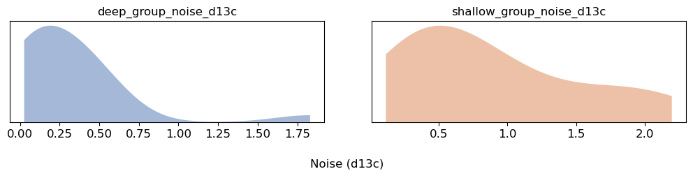
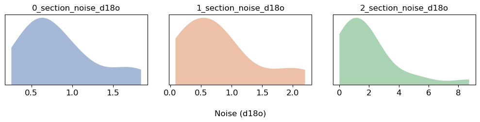
fig = stratmc.plotting.age_constraints(full_trace, '1')
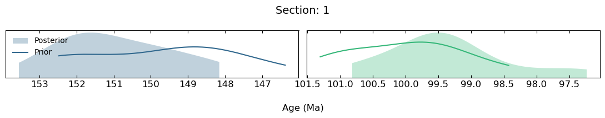
fig = stratmc.plotting.age_constraints(full_trace, '2')
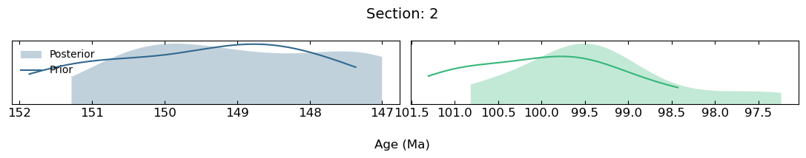
fig = stratmc.plotting.limiting_age_constraints(full_trace, sample_df, ages_df, '2')
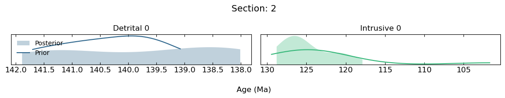
ages_df
| section | height | age | age_std | shared? | name | intermediate detrital? | intermediate intrusive? | Exclude? | distribution_type | param_1_name | param_2_name | param_1 | param_2 | |
|---|---|---|---|---|---|---|---|---|---|---|---|---|---|---|
| 0 | 0 | 0.000000 | 150.0 | 2.0 | False | NaN | False | False | False | Normal | NaN | NaN | NaN | NaN |
| 1 | 0 | 7.145956 | 100.0 | 1.0 | False | NaN | False | False | False | Normal | NaN | NaN | NaN | NaN |
| 2 | 1 | 0.000000 | 150.0 | 2.0 | False | NaN | False | False | False | Normal | NaN | NaN | NaN | NaN |
| 3 | 1 | 1.500000 | 120.0 | 1.0 | False | INTRUSIVE_1 | False | True | False | Normal | NaN | NaN | NaN | NaN |
| 4 | 1 | 2.300000 | 130.0 | 2.0 | False | DETRITRAL_1 | True | False | False | Normal | NaN | NaN | NaN | NaN |
| 5 | 1 | 3.553568 | 100.0 | 1.0 | True | S1_S2_min_age | False | False | False | Normal | NaN | NaN | NaN | NaN |
| 6 | 2 | 0.000000 | NaN | NaN | False | NaN | False | False | False | Uniform | lower | upper | 147.0 | 152.0 |
| 7 | 2 | 4.000000 | NaN | NaN | False | INTRUSIVE_2 | False | True | False | Cauchy | alpha | beta | 125.0 | 1.0 |
| 8 | 2 | 5.000000 | NaN | NaN | False | DETRITAL_2 | True | False | False | Uniform | lower | upper | 138.0 | 142.0 |
| 9 | 2 | 7.582216 | 100.0 | 1.0 | True | S1_S2_min_age | False | False | False | Normal | NaN | NaN | NaN | NaN |
fig = stratmc.plotting.sadler_plot(full_trace, sample_df, ages_df, include_age_constraints = False, scale = 'log')
fig = stratmc.plotting.sadler_plot(full_trace, sample_df, ages_df, include_age_constraints = True)
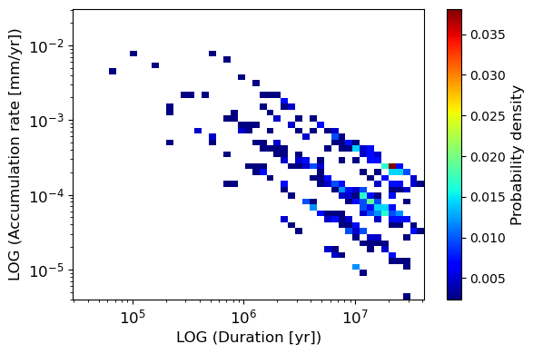
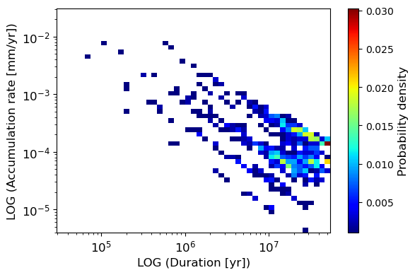
fig = stratmc.plotting.accumulation_rate_stratigraphy(full_trace, sample_df, ages_df, include_age_constraints = True)
fig = stratmc.plotting.accumulation_rate_stratigraphy(full_trace, sample_df, ages_df, include_age_constraints = False, rate_scale = 'log')
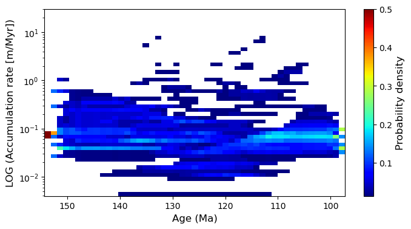
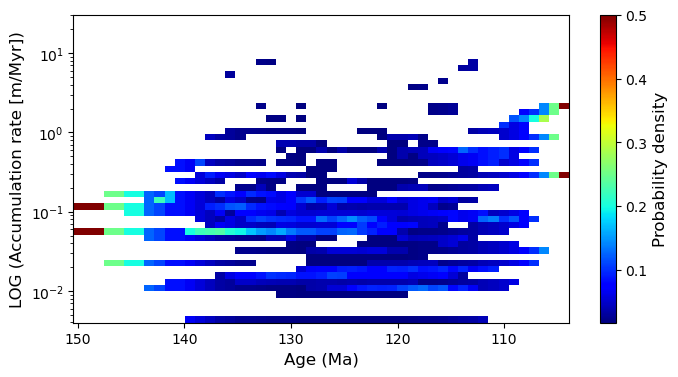
stratmc.plotting.section_age_range(full_trace, sample_df, ages_df, 125, 130, legend = True, sections = ['1'])
Mapping age models to sections
fig = stratmc.plotting.proxy_data_gaps(full_trace)
fig = stratmc.plotting.proxy_data_gaps(full_trace, yaxis = 'count')
time_grid = np.arange(100, 150, 2)
fig = stratmc.plotting.proxy_data_gaps(full_trace, yaxis = 'count', time_grid = time_grid)
Calculating gaps in the data
Calculating gaps in the data
Calculating gaps in the data
fig = stratmc.plotting.proxy_data_density(full_trace)
time_grid = np.arange(100, 150, 2)
fig = stratmc.plotting.proxy_data_density(full_trace, time_grid = time_grid)
Counting data in time bins
Counting data in time bins
stratmc.plotting.lengthscale_traceplot(full_trace)
stratmc.plotting.lengthscale_traceplot(full_trace, chains = [0, 1])
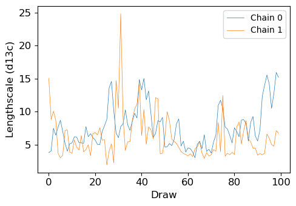
stratmc.plotting.lengthscale_stability(full_trace, proxy = 'd18o')
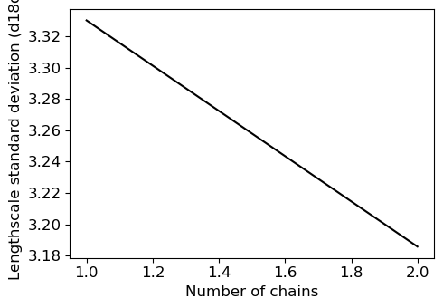
stratmc.plotting.proxy_signal_stability(full_trace, proxy = 'd13c')
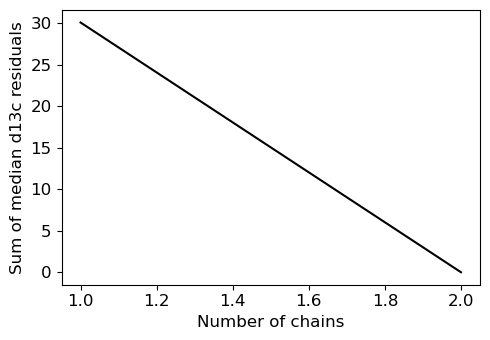
stratmc.plotting.proxy_signal_stability(full_trace, proxy = 'd18o')
stratmc.plotting.proxy_strat(sample_df, ages_df, plot_constraints = True, plot_excluded_samples = True)
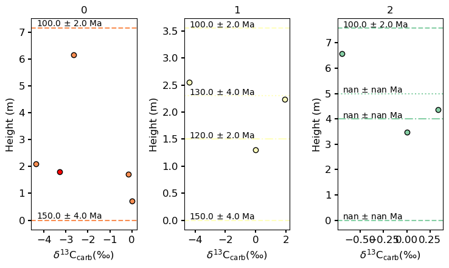
sample_df
| section | height | age | d13c | d18o | d34s | Exclude? | offset_group_d13c | offset_group_d18o | noise_group_d13c | noise_group_d18o | d13c_std | d13c_population_std | d18o_std | d18o_population_std | |
|---|---|---|---|---|---|---|---|---|---|---|---|---|---|---|---|
| 0 | 0 | 0.726341 | 143.506207 | 0.000000 | NaN | 22.174702 | False | deep | deep | deep | deep | 0.1 | NaN | 0.1 | NaN |
| 1 | 0 | 1.019653 | 129.113846 | NaN | 2.363407 | 20.344371 | False | shallow | shallow | shallow | shallow | 0.1 | NaN | 0.1 | NaN |
| 2 | 0 | 1.706731 | 120.555006 | -0.150746 | 3.299016 | 21.083621 | False | deep | deep | deep | deep | 0.1 | NaN | 0.1 | NaN |
| 3 | 0 | 1.813515 | 113.941947 | -3.295373 | 2.187376 | 28.621435 | True | shallow | shallow | shallow | shallow | 0.1 | NaN | 0.1 | NaN |
| 4 | 0 | 2.090381 | 109.295562 | -4.373225 | 4.273271 | 21.049269 | False | deep | deep | deep | deep | 0.1 | NaN | 0.1 | NaN |
| 5 | 0 | 6.145956 | 105.868777 | -2.653027 | 5.778884 | 20.030358 | False | shallow | shallow | shallow | shallow | 0.1 | NaN | 0.1 | NaN |
| 6 | 1 | 1.307739 | 139.461037 | 0.000239 | 0.901868 | 33.228554 | False | deep | deep | deep | deep | 0.1 | NaN | 0.1 | NaN |
| 7 | 1 | 2.235939 | 125.969574 | 1.955658 | 3.742717 | 20.011178 | False | shallow | shallow | shallow | shallow | 0.1 | NaN | 0.1 | NaN |
| 8 | 1 | 2.553568 | 109.396070 | -4.413917 | 4.217433 | 21.135780 | False | deep | deep | deep | deep | 0.1 | NaN | 0.1 | NaN |
| 9 | 2 | 3.464194 | 143.400160 | 0.000000 | NaN | 22.347291 | False | shallow | shallow | shallow | shallow | 0.1 | NaN | 0.1 | NaN |
| 10 | 2 | 4.356996 | 136.769865 | 0.337462 | NaN | 35.110893 | False | deep | deep | deep | deep | 0.1 | NaN | 0.1 | NaN |
| 11 | 2 | 6.582216 | 119.169039 | -0.695132 | NaN | 22.712199 | False | shallow | shallow | shallow | shallow | 0.1 | NaN | 0.1 | NaN |
stratmc.plotting.section_proxy_residuals(full_trace, sample_df)
(4, 200)
(3, 200)
(3, 200)
stratmc.plotting.section_proxy_residuals(full_trace, sample_df)
(4, 200)
(3, 200)
(3, 200)
stratmc.plotting.section_proxy_residuals(full_trace, sample_df, include_excluded_samples = False, proxy = 'd18o')
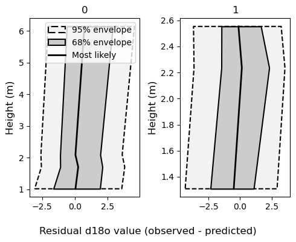
predict_ages = full_trace.X_new.X_new.values
interpolated_df = stratmc.inference.extend_age_model(full_trace, sample_df, ages_df, new_proxies = 'd34s')
interpolated_proxy_df = stratmc.inference.interpolate_proxy(interpolated_df, 'd34s', predict_ages)
stratmc.plotting.interpolated_proxy_inference(interpolated_df, interpolated_proxy_df, 'd34s', plot_data = True)
Interpolating section age models
Interpolating proxy values
Calculating summary statistics
interpolated_df
| section | height | age | d13c | d18o | d34s | Exclude? | offset_group_d13c | offset_group_d18o | noise_group_d13c | ... | d18o_std | d18o_population_std | interp | age_draws | mle | 2.5 | 16 | 50 | 84 | 97.5 | |
|---|---|---|---|---|---|---|---|---|---|---|---|---|---|---|---|---|---|---|---|---|---|
| 0 | 0 | 0.726341 | 143.506207 | 0.000000 | NaN | 22.174702 | False | deep | deep | deep | ... | 0.1 | NaN | y | [138.47873528594013, 130.51397135943617, 145.9... | 136.046625 | 122.183350 | 127.262960 | 135.523356 | 142.935330 | 147.258926 |
| 1 | 0 | 1.019653 | 129.113846 | NaN | 2.363407 | 20.344371 | False | shallow | shallow | shallow | ... | 0.1 | NaN | y | [137.90390646489504, 127.49955441309709, 137.9... | 131.341875 | 119.025287 | 124.779150 | 131.509380 | 137.129426 | 142.237339 |
| 2 | 0 | 1.706731 | 120.555006 | -0.150746 | 3.299016 | 21.083621 | False | deep | deep | deep | ... | 0.1 | NaN | y | [135.3497218754008, 125.44356274705592, 135.39... | 127.382850 | 116.592918 | 120.716276 | 127.392750 | 134.188906 | 139.111444 |
| 3 | 0 | 2.090381 | 109.295562 | -4.373225 | 4.273271 | 21.049269 | False | deep | deep | deep | ... | 0.1 | NaN | y | [132.63001459892996, 112.6261255208306, 131.52... | 118.825924 | 104.046143 | 111.084517 | 118.772271 | 128.095532 | 133.048960 |
| 4 | 0 | 6.145956 | 105.868777 | -2.653027 | 5.778884 | 20.030358 | False | shallow | shallow | shallow | ... | 0.1 | NaN | y | [126.80004767460147, 110.03458247607502, 131.0... | 114.576989 | 101.769561 | 106.783976 | 114.856048 | 124.873944 | 132.382985 |
| 5 | 1 | 1.307739 | 139.461037 | 0.000239 | 0.901868 | 33.228554 | False | deep | deep | deep | ... | 0.1 | NaN | y | [134.97219228144763, 129.06499812640956, 140.8... | 133.637085 | 122.029677 | 127.563183 | 133.631841 | 141.183745 | 146.049632 |
| 6 | 1 | 2.235939 | 125.969574 | 1.955658 | 3.742717 | 20.011178 | False | shallow | shallow | shallow | ... | 0.1 | NaN | y | [131.33931777069398, 123.42558073502533, 138.1... | 125.386416 | 107.378544 | 117.079081 | 125.280960 | 132.780317 | 139.514661 |
| 7 | 1 | 2.553568 | 109.396070 | -4.413917 | 4.217433 | 21.135780 | False | deep | deep | deep | ... | 0.1 | NaN | y | [121.40763497457581, 107.5771520347069, 116.30... | 116.923285 | 101.873350 | 108.051276 | 116.256567 | 124.024188 | 129.302170 |
| 8 | 2 | 3.464194 | 143.400160 | 0.000000 | NaN | 22.347291 | False | shallow | shallow | shallow | ... | 0.1 | NaN | y | [136.0859830599092, 127.72253718105978, 127.76... | 136.498245 | 124.348356 | 128.675378 | 136.338722 | 141.886696 | 145.570070 |
| 9 | 2 | 4.356996 | 136.769865 | 0.337462 | NaN | 35.110893 | False | deep | deep | deep | ... | 0.1 | NaN | y | [126.1054650580997, 123.36945974856819, 125.92... | 130.823794 | 120.134929 | 125.489667 | 130.984119 | 138.051334 | 142.208807 |
| 10 | 2 | 6.582216 | 119.169039 | -0.695132 | NaN | 22.712199 | False | shallow | shallow | shallow | ... | 0.1 | NaN | y | [119.70401663159323, 122.4451383744259, 122.33... | 124.797859 | 110.319263 | 116.657952 | 124.324489 | 132.258376 | 136.533587 |
11 rows × 23 columns
interpolated_proxy_df
| age | d34s_draws | mle | 2.5 | 16 | 50 | 84 | 97.5 | |
|---|---|---|---|---|---|---|---|---|
| 0 | 100.0 | [22.712198862643337, 21.13578021701801, 21.135... | 20.502038 | 20.030358 | 20.030358 | 21.135780 | 21.135780 | 22.712199 |
| 0 | 100.5 | [22.712198862643337, 21.13578021701801, 21.135... | 20.502038 | 20.030358 | 20.030358 | 21.135780 | 21.135780 | 22.712199 |
| 0 | 101.0 | [22.712198862643337, 21.13578021701801, 21.135... | 20.502038 | 20.030358 | 20.030358 | 21.135780 | 21.135780 | 22.712199 |
| 0 | 101.5 | [22.712198862643337, 21.13578021701801, 21.135... | 20.515515 | 20.030358 | 20.030358 | 21.109219 | 21.135780 | 22.712199 |
| 0 | 102.0 | [22.712198862643337, 21.13578021701801, 21.135... | 20.502038 | 20.030358 | 20.030358 | 20.983793 | 21.135780 | 22.712199 |
| ... | ... | ... | ... | ... | ... | ... | ... | ... |
| 0 | 148.0 | [22.174702219450584, 22.174702219450584, 22.17... | 22.633106 | 22.174702 | 22.174702 | 22.347291 | 33.228554 | 33.228554 |
| 0 | 148.5 | [22.174702219450584, 22.174702219450584, 22.17... | 22.598272 | 22.174702 | 22.174702 | 22.347291 | 33.228554 | 33.228554 |
| 0 | 149.0 | [22.174702219450584, 22.174702219450584, 22.17... | 22.617662 | 22.174702 | 22.174702 | 22.347291 | 33.228554 | 33.228554 |
| 0 | 149.5 | [22.174702219450584, 22.174702219450584, 22.17... | 22.599167 | 22.174702 | 22.174702 | 22.347291 | 33.228554 | 33.228554 |
| 0 | 150.0 | [22.174702219450584, 22.174702219450584, 22.17... | 22.619078 | 22.174702 | 22.174702 | 22.347291 | 33.228554 | 33.228554 |
101 rows × 8 columns
proxies = ['d34s']
np.sort(np.unique((np.concatenate([sample_df.index[~np.isnan(sample_df[proxy])] for proxy in proxies]))))
array([ 0, 1, 2, 3, 4, 5, 6, 7, 8, 9, 10, 11])
sample_df
| section | height | age | d13c | d18o | d34s | Exclude? | offset_group_d13c | offset_group_d18o | noise_group_d13c | noise_group_d18o | d13c_std | d13c_population_std | d18o_std | d18o_population_std | |
|---|---|---|---|---|---|---|---|---|---|---|---|---|---|---|---|
| 0 | 0 | 0.726341 | 143.506207 | 0.000000 | NaN | 22.174702 | False | deep | deep | deep | deep | 0.1 | NaN | 0.1 | NaN |
| 1 | 0 | 1.019653 | 129.113846 | NaN | 2.363407 | 20.344371 | False | shallow | shallow | shallow | shallow | 0.1 | NaN | 0.1 | NaN |
| 2 | 0 | 1.706731 | 120.555006 | -0.150746 | 3.299016 | 21.083621 | False | deep | deep | deep | deep | 0.1 | NaN | 0.1 | NaN |
| 3 | 0 | 1.813515 | 113.941947 | -3.295373 | 2.187376 | 28.621435 | True | shallow | shallow | shallow | shallow | 0.1 | NaN | 0.1 | NaN |
| 4 | 0 | 2.090381 | 109.295562 | -4.373225 | 4.273271 | 21.049269 | False | deep | deep | deep | deep | 0.1 | NaN | 0.1 | NaN |
| 5 | 0 | 6.145956 | 105.868777 | -2.653027 | 5.778884 | 20.030358 | False | shallow | shallow | shallow | shallow | 0.1 | NaN | 0.1 | NaN |
| 6 | 1 | 1.307739 | 139.461037 | 0.000239 | 0.901868 | 33.228554 | False | deep | deep | deep | deep | 0.1 | NaN | 0.1 | NaN |
| 7 | 1 | 2.235939 | 125.969574 | 1.955658 | 3.742717 | 20.011178 | False | shallow | shallow | shallow | shallow | 0.1 | NaN | 0.1 | NaN |
| 8 | 1 | 2.553568 | 109.396070 | -4.413917 | 4.217433 | 21.135780 | False | deep | deep | deep | deep | 0.1 | NaN | 0.1 | NaN |
| 9 | 2 | 3.464194 | 143.400160 | 0.000000 | NaN | 22.347291 | False | shallow | shallow | shallow | shallow | 0.1 | NaN | 0.1 | NaN |
| 10 | 2 | 4.356996 | 136.769865 | 0.337462 | NaN | 35.110893 | False | deep | deep | deep | deep | 0.1 | NaN | 0.1 | NaN |
| 11 | 2 | 6.582216 | 119.169039 | -0.695132 | NaN | 22.712199 | False | shallow | shallow | shallow | shallow | 0.1 | NaN | 0.1 | NaN |
np.unique(sample_df.dropna(subset = ['d18o'], how = 'all')['section'])
array(['0', '1'], dtype=object)
sections = np.unique(sample_df['section'])
sections.dtype
dtype('O')
# get list of proxies included in model from full_trace
variables = [
l
for l in list(full_trace["posterior"].data_vars.keys())[:50]
if (f"{'gp_ls_'}" in l) and (f"{'unshifted'}" not in l)
]
proxies = []
for var in variables:
proxies.append(var[6:])
sections
array(['0', '1', '2'], dtype=object)
test_sample_df, test_ages_df = stratmc.data.clean_data(sample_df, ages_df, proxies = ['d34s'], sections = sections)
test_sample_df
| section | height | age | d13c | d18o | d34s | Exclude? | offset_group_d13c | offset_group_d18o | noise_group_d13c | noise_group_d18o | d13c_std | d13c_population_std | d18o_std | d18o_population_std | |
|---|---|---|---|---|---|---|---|---|---|---|---|---|---|---|---|
| 0 | 0 | 0.726341 | 143.506207 | 0.000000 | NaN | 22.174702 | False | deep | deep | deep | deep | 0.1 | NaN | 0.1 | NaN |
| 1 | 0 | 1.019653 | 129.113846 | NaN | 2.363407 | 20.344371 | False | shallow | shallow | shallow | shallow | 0.1 | NaN | 0.1 | NaN |
| 2 | 0 | 1.706731 | 120.555006 | -0.150746 | 3.299016 | 21.083621 | False | deep | deep | deep | deep | 0.1 | NaN | 0.1 | NaN |
| 3 | 0 | 1.813515 | 113.941947 | -3.295373 | 2.187376 | 28.621435 | True | shallow | shallow | shallow | shallow | 0.1 | NaN | 0.1 | NaN |
| 4 | 0 | 2.090381 | 109.295562 | -4.373225 | 4.273271 | 21.049269 | False | deep | deep | deep | deep | 0.1 | NaN | 0.1 | NaN |
| 5 | 0 | 6.145956 | 105.868777 | -2.653027 | 5.778884 | 20.030358 | False | shallow | shallow | shallow | shallow | 0.1 | NaN | 0.1 | NaN |
| 6 | 1 | 1.307739 | 139.461037 | 0.000239 | 0.901868 | 33.228554 | False | deep | deep | deep | deep | 0.1 | NaN | 0.1 | NaN |
| 7 | 1 | 2.235939 | 125.969574 | 1.955658 | 3.742717 | 20.011178 | False | shallow | shallow | shallow | shallow | 0.1 | NaN | 0.1 | NaN |
| 8 | 1 | 2.553568 | 109.396070 | -4.413917 | 4.217433 | 21.135780 | False | deep | deep | deep | deep | 0.1 | NaN | 0.1 | NaN |
| 9 | 2 | 3.464194 | 143.400160 | 0.000000 | NaN | 22.347291 | False | shallow | shallow | shallow | shallow | 0.1 | NaN | 0.1 | NaN |
| 10 | 2 | 4.356996 | 136.769865 | 0.337462 | NaN | 35.110893 | False | deep | deep | deep | deep | 0.1 | NaN | 0.1 | NaN |
| 11 | 2 | 6.582216 | 119.169039 | -0.695132 | NaN | 22.712199 | False | shallow | shallow | shallow | shallow | 0.1 | NaN | 0.1 | NaN |
for proxy in ['d34s']:
if proxy + '_std' not in list(sample_df.columns):
sample_df[proxy + '_std'] = np.nan
idx = np.isnan(sample_df[proxy + '_std'])
idx[8] = False
sample_df.loc[idx, proxy + '_std'] = 0.1
sample_df
| section | height | age | d13c | d18o | d34s | Exclude? | offset_group_d13c | offset_group_d18o | noise_group_d13c | noise_group_d18o | d13c_std | d18o_std | d34s_std | |
|---|---|---|---|---|---|---|---|---|---|---|---|---|---|---|
| 0 | 0 | 0.726341 | 143.506207 | 0.000000 | NaN | 22.174702 | False | deep | deep | deep | deep | 0.1 | 0.1 | 0.1 |
| 1 | 0 | 1.019653 | 129.113846 | NaN | 2.363407 | 20.344371 | False | shallow | shallow | shallow | shallow | 0.1 | 0.1 | 0.1 |
| 2 | 0 | 1.706731 | 120.555006 | -0.150746 | 3.299016 | 21.083621 | False | deep | deep | deep | deep | 0.1 | 0.1 | 0.1 |
| 3 | 0 | 1.813515 | 113.941947 | -3.295373 | 2.187376 | 28.621435 | True | shallow | shallow | shallow | shallow | 0.1 | 0.1 | 0.1 |
| 4 | 0 | 2.090381 | 109.295562 | -4.373225 | 4.273271 | 21.049269 | False | deep | deep | deep | deep | 0.1 | 0.1 | 0.1 |
| 5 | 0 | 6.145956 | 105.868777 | -2.653027 | 5.778884 | 20.030358 | False | shallow | shallow | shallow | shallow | 0.1 | 0.1 | 0.1 |
| 6 | 1 | 1.307739 | 139.461037 | 0.000239 | 0.901868 | 33.228554 | False | deep | deep | deep | deep | 0.1 | 0.1 | 0.1 |
| 7 | 1 | 2.235939 | 125.969574 | 1.955658 | 3.742717 | 20.011178 | False | shallow | shallow | shallow | shallow | 0.1 | 0.1 | 0.1 |
| 8 | 1 | 2.553568 | 109.396070 | -4.413917 | 4.217433 | 21.135780 | False | deep | deep | deep | deep | 0.1 | 0.1 | NaN |
| 9 | 2 | 3.464194 | 143.400160 | 0.000000 | NaN | 22.347291 | False | shallow | shallow | shallow | shallow | 0.1 | 0.1 | 0.1 |
| 10 | 2 | 4.356996 | 136.769865 | 0.337462 | NaN | 35.110893 | False | deep | deep | deep | deep | 0.1 | 0.1 | 0.1 |
| 11 | 2 | 6.582216 | 119.169039 | -0.695132 | NaN | 22.712199 | False | shallow | shallow | shallow | shallow | 0.1 | 0.1 | 0.1 |